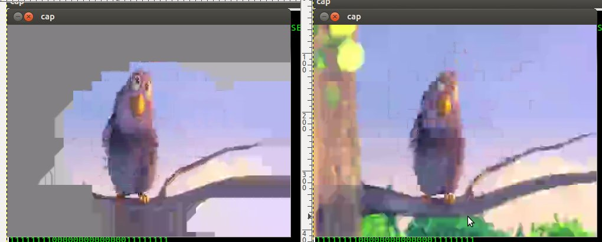

Tested x264's per-macroblock quantization offsets with a circle located at the center of the image. Macroblocks outside the circle have a high offset; macroblocks within the circle do not have any extra offsets.
Frame 550 of Big Buck Bunny, with custom quantization offsets (left), and without (right). Both are being encoded with the same target bitrate. The quantization offset was set artificially high (+100) and the target bitrate artificially low (25kbps) in order to exaggerate these effects. Note that macroblocks can still generally refer to others above and to the left, so the bottom-quarter of the quantized image is still being reconstructed as an area with nearly zero difference from the reference.
Conducted as part of ongoing work to tune video compression for chat and conferencing. Relevant commit: 526423b6
Josh Allmann 24 September 2012